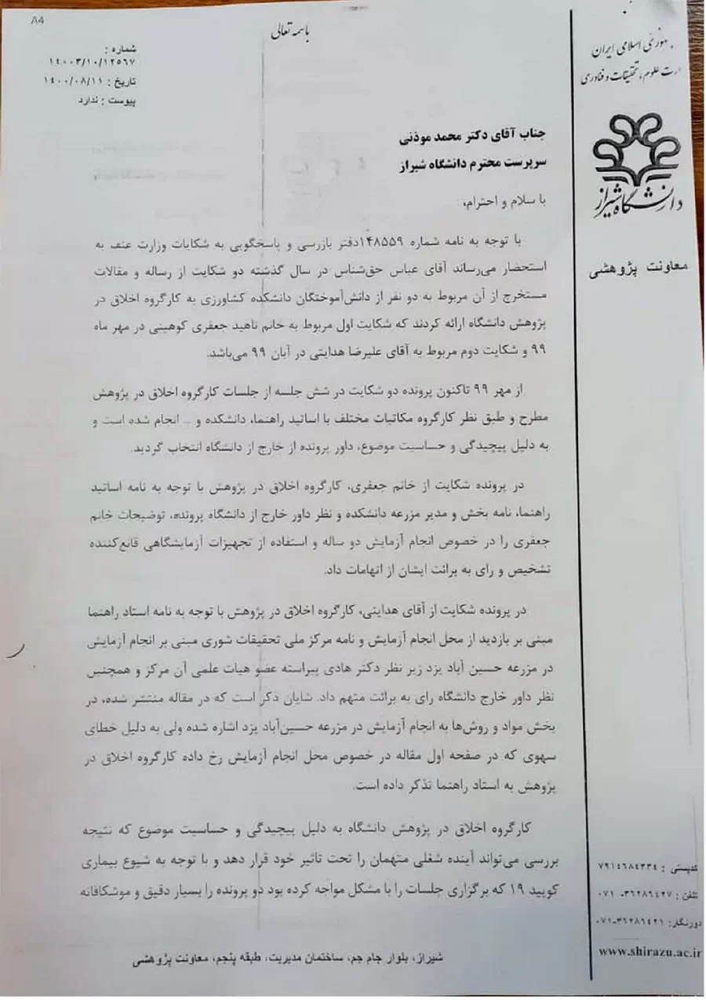
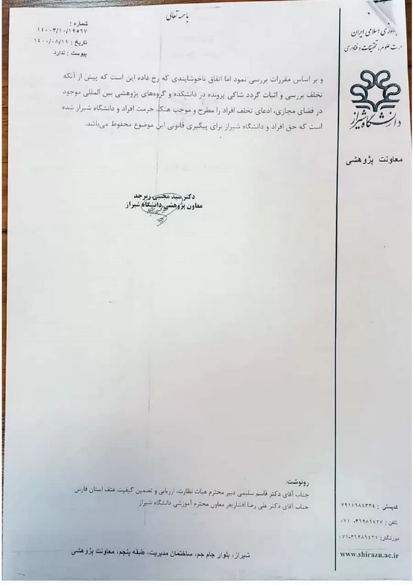

Before turning to the efforts undertaken to secure the retraction of the fraudulent papers from Shiraz University, let us briefly review the story once more.
In 2017, while I was a doctoral student at Shiraz University, I discovered that some of the scientific papers and dissertations produced by our department contained fabricated data, and that certain experiments had never been conducted at all.
After consulting experienced specialists and attending dissertation defense sessions, I confidentially and professionally raised my concerns and the initial evidence of research misconduct with the supervisory team, which consisted of two principal advisors.
I explicitly asked them not to publish these findings.
My objective was to correct the process, not to catch anyone out.
Nevertheless, my concerns were ignored, and I was assured that no fabricated or questionable findings would be published.
Three years later, in 2020, after I had graduated, I was astonished to discover that new papers had been published reporting exactly the same questionable results about which I had previously warned them.
Thus, the first step had been confidential and professional dialogue with the supervisors themselves.
The goal was reform, not exposure.
Indeed, this may have been an unprecedented situation: someone warning authors about scientific misconduct before it actually occurred—that is, before the fraudulent papers were published.
But after that first effort failed, and after that good faith was betrayed, I formally reported the matter in 2020 through six separate letters to the Research Ethics Committee of Shiraz University.
In brief, despite repeated follow-ups through both correspondence and in-person meetings, no decision was issued in either case for an entire year.
Later, COVID-19 was offered as the explanation, even though administrative affairs and university meetings of all kinds continued to take place during that period.
Only after complaints were filed with the Parliamentary Education Commission and the Ministry of Science was a ruling finally issued, near the end of the Twelfth Government.
Please take a look at the second slide of this post.
(My apologies for the poor image quality. Obtaining even this copy required considerable effort and a formal complaint.)
What was the committee’s verdict?
Acquittal.
In both cases.
Two dissertations and more than six papers.
In other words, the committee dismissed all of the evidence presented in Parts Two through Four of Lesson One.
Remember?
The eye test.
The lost farm.
The imaginary equipment.
All of it.
Without offering any explanation whatsoever as to why or how.
As if that were not enough, the final paragraph of the ruling added both falsehoods and threats to the mix—a threat that was later carried out.
And who do you think was the influential member of that committee?
Yes.
Once again, a senior university official who would later become President of Shiraz University.


English Translation of the Shiraz University Research Ethics Committee Ruling
Dr. Mohammad Mozani
Esteemed Acting President of Shiraz University
Greetings and Regards,
With reference to letter No. 148559 from the Office of Inspection and Complaint Handling of the Ministry of Science, Research, and Technology, it is hereby brought to your attention that Mr. Abbas Haghshenas submitted two complaints last year to the University's Research Ethics Committee regarding the dissertations and their resulting publications of two graduates from the Faculty of Agriculture.
The first complaint pertains to Ms. Nahid Jafari Kouhini in Mehr 1399 (September–October 2020), and the second to Mr. Alireza Hedayati in Aban 1399 (October–November 2020).
Since Mehr 1399, the two complaints have been reviewed across six sessions of the Research Ethics Committee.
In line with the committee’s procedures and due to the complexity and sensitivity of the matter, extensive correspondence was conducted with the respective supervisors, the faculty, and other relevant parties.
Moreover, given the nature of the cases, an external reviewer—independent of the university—was appointed.
In the case concerning Ms. Jafari, the Research Ethics Committee, after reviewing the letters from her supervisors, the department, the farm manager at the faculty, as well as the opinion of the external reviewer, found Ms. Jafari’s explanations regarding the two-year experiment and the use of laboratory equipment to be satisfactory.
Consequently, the committee ruled in favor of her acquittal from all allegations.
In the case concerning Mr. Hedayati, the Research Ethics Committee considered the letter from the supervising professor affirming the site visit of the experimental field, along with a letter from the National Salinity Research Center confirming that the experiments had been conducted at the Hoseinabad Farm in Yazd under the supervision of Dr. Hadi Pirasteh, a faculty member of that center.
Based on these documents and the opinion of the external reviewer, the committee likewise issued a verdict of acquittal.
It is worth noting that while the published article correctly refers to the Hoseinabad Farm in Yazd in the “Materials and Methods” section, an inadvertent error occurred on the article’s first page regarding the experiment location.
For this, the Research Ethics Committee issued a formal notice to the supervising professor.
Due to the complexity and sensitivity of the cases—given that the outcome could potentially affect the professional futures of the accused—and in light of the complications posed by the COVID-19 pandemic, which disrupted the regular scheduling of meetings, the Research Ethics Committee of Shiraz University conducted a thorough and meticulous investigation in full compliance with applicable regulations.
However, an unfortunate incident has occurred: prior to the formal verification and substantiation of any misconduct, the complainant publicized the allegations in the faculty and within international research communities via online platforms, thereby damaging the reputations of the individuals involved as well as that of Shiraz University.
The right of the individuals and the university to pursue legal recourse in this matter remains reserved.
Dr. Seyed Mojtaba Zebarjad
Vice President for Research
Shiraz University
Letter No.: 14003/10/12567
Date: 1400/08/11 (November 2, 2021)
Attachment: None.